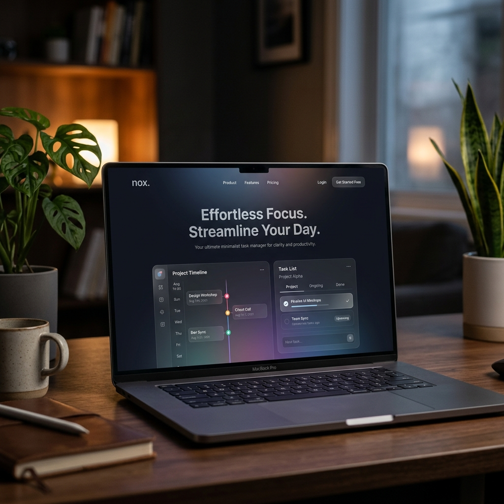
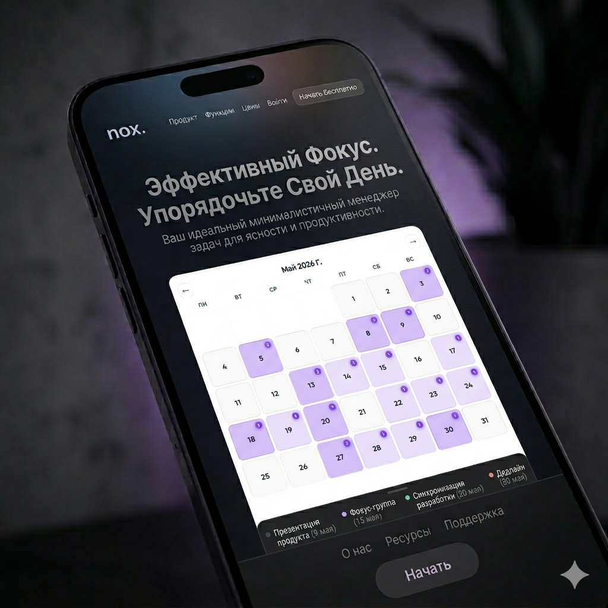

Минималистичный таск-менеджер, который помогает фокусироваться на главном, не отвлекаясь на шум.

Умная система приоритетов сама поднимает важные и срочные дела наверх — дедлайны, вес приоритета, буст завершения.
Никаких лишних кнопок. Только вы и ваши задачи в чистом тёмном пространстве без отвлечений.
Декомпозируйте цели на подзадачи с прогресс-баром и авто-завершением родительской задачи.
Бекап и восстановление через ваш Google Drive (OAuth 2.0) — данные только под вашим контролем.
Месячная сетка с цветовой нагрузкой и 30-дневный Гантт для визуального планирования.
GitHub-стиль график активности и встроенный 25-минутный таймер для фокусировки.
Цветные теги с привязкой Many-to-many, глобальный поиск и глубокая фильтрация списков.
Полностью открытый код на GitHub. Никаких телеметрий, трекеров и платных подписок.
Nox убирает все лишнее, оставляя только то, что действительно важно здесь и сейчас.

Начните управлять задачами правильно прямо сейчас.
Скачать Nox бесплатно v2.0.0 • Windows 10/11 • Open Source